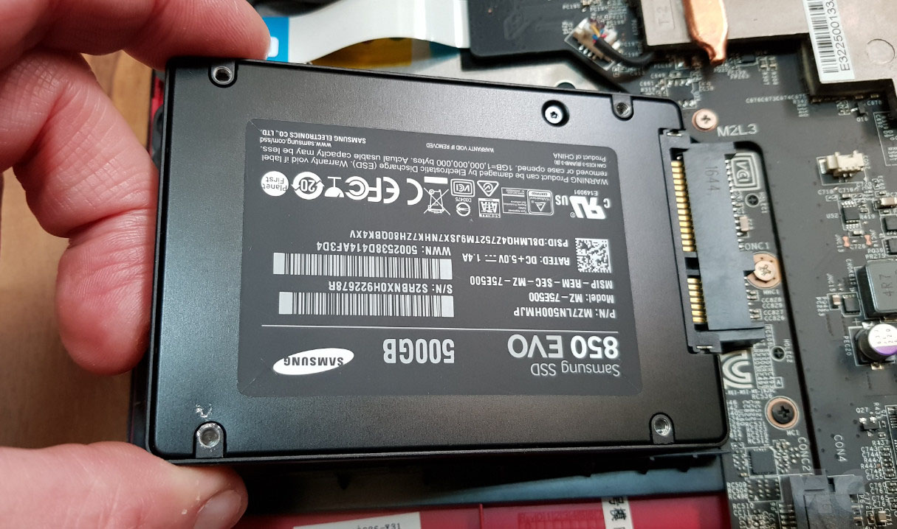
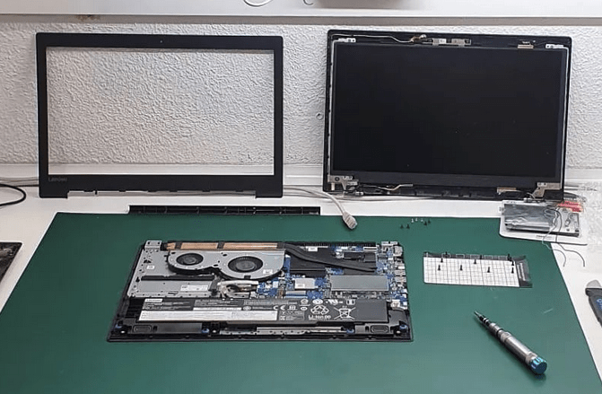
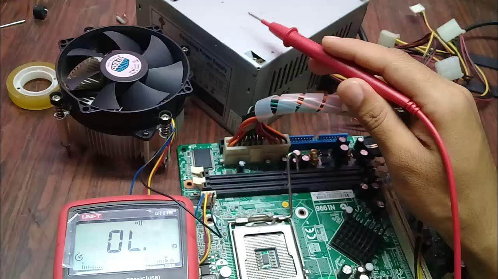
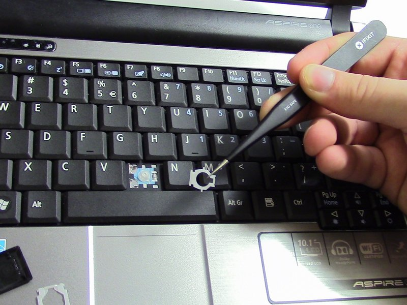
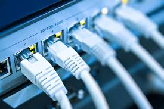
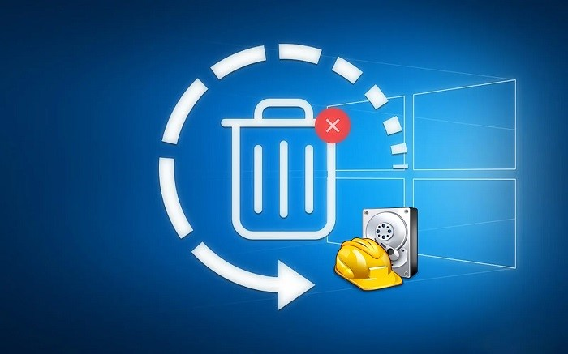
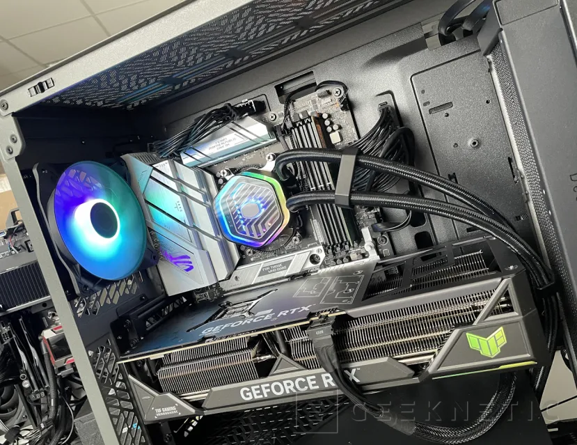
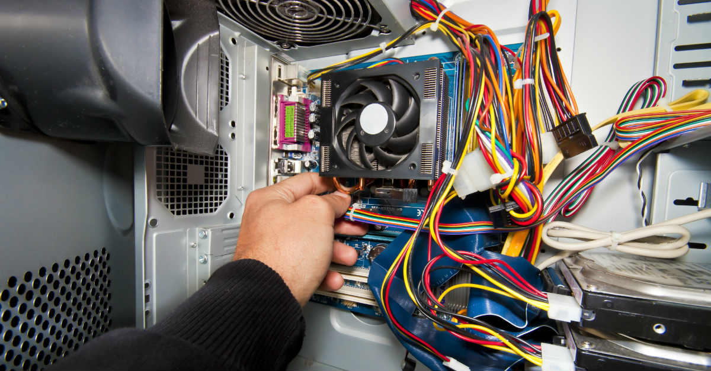
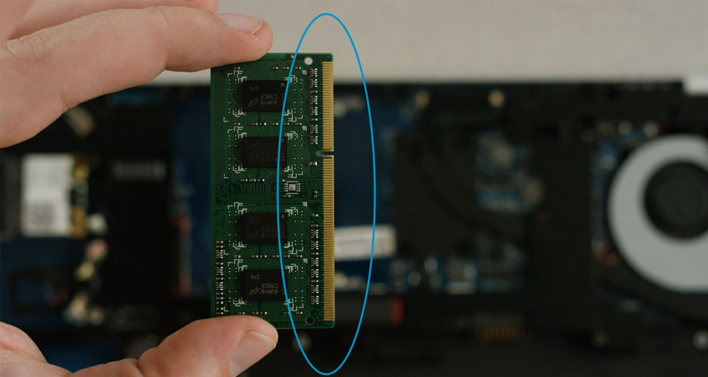

Instalación y Actualización de Software
Instalamos y actualizamos sistemas operativos y programas, asegurando que tu equipo funcione con la última versión disponible.
Mantenimiento Preventivo

Realizamos limpieza interna y externa de equipos, eliminando polvo y residuos que afectan el rendimiento y la refrigeración de tus dispositivos.
Reemplazo de Disco
Duro / SSD

Instalamos nuevos discos duros o unidades de estado sólido (SSD) para mejorar la velocidad y el almacenamiento de tu dispositivo.
Reemplazo de
Pantalla

Reemplazo de pantallas dañadas o rotas. Los estudiantes garantizan una instalación funcional bajo supervisión.
Reparación de
Placa Base

Diagnóstico y reparación de placas base dañadas, solucionando problemas como fallos de arranque o pérdida de señal.
Reparación o
Reemplazo de Teclado

Reemplazo de teclados dañados o reparación de teclas específicas que no funcionan correctamente, restaurando la funcionalidad del equipo.
Configuración de Redes

Asistencia en la configuración de redes Wi-Fi y conexión a internet para equipos nuevos o con problemas de conexión, mejorando la conectividad.
Recuperación Básica de Archivos

Intentos básicos para recuperar datos eliminados o transferir información entre equipos, con enfoque en documentos importantes.
Diagnóstico General
Revisión inicial del equipo para identificar problemas comunes y brindar recomendaciones de reparación o mantenimiento, adaptadas a tus necesidades.
Optimización de Refrigeración

Limpieza de ventiladores o remplazo de componentes básicos para evitar sobrecalentamiento y prolongar la vida útil del equipo.
Configuración de Periféricos

Asistencia en la instalación y configuración de impresoras, cámaras web, y otros dispositivos externos, asegurando su funcionamiento correcto.
Actualización de Memoria RAM

Aumentamos la capacidad de memoria RAM en tu equipo para mejorar su rendimiento, ideal para tareas más exigentes o multitarea.